In brief
Blizzard announced over 600 new recipes without publishing a complete list. This page gathers the 179 Alchemy recipes recorded in the game files (client 1.60.1.70862, consulted on 12 November 2026). Names and required skills come from the game files. An acquisition marked “unknown” remains to be confirmed. Tables are grouped by required skill bracket. When acquisition, source or zone is not given in the data consulted, the cell says so. No drop rates are repeated; none were given.[1][2][4][3]
Key points
- 179 Alchemy recipes listed below, from the game files (client 1.60.1.70862, 12 November 2026); acquisition marked “unknown” remains to be confirmed.[4] Game data (client 1.60.1.70862)
- Acquisition given in the game files: trainer 46, drop 1, quest 4, reputation 7, unknown 121.[4] Game data (client 1.60.1.70862)
- Blizzard has not published the complete recipe list, nor trainers, vendors, prices or drop rates.[1][2]
- Reagents of 179 recipes and 84 materials linked to their “where to find it” card (game files).[5] Game data (client 1.60.1.70862)
How to read this list
This list is not official. Blizzard has not published the details of this profession’s recipes (vendors, trainers, monsters, zones, prices, drop rates). The names and skills below come from the game files (client 1.60.1.70862). An acquisition marked “unknown” remains to be confirmed. The French name is the in-game localization when one was found; otherwise the English name is used in both languages. “Trainer” also covers recipes listed as learned automatically with the profession. An overview page already online, Recipes and advanced blueprints (/en/professions/recipes-and-advanced-blueprints/), restates the official acquisition rules and the lootable recipes already shown by zone.[1][2][4][3]
Skill 1–75 — 25 recipes (game data)
| Recipe | Required skill | How obtained | Source | Zone | Status |
|---|---|---|---|---|---|
| Elixir of Minor Force | 1 | trainer | learned automatically with the profession | not recorded | game data |
| Mana Well | 1 | trainer | profession trainer (unnamed) | not recorded | game data |
| Minor Arcane Elixir | 1 | trainer | learned automatically with the profession | not recorded | game data |
| Elixir of Minor Spirit | 15 | unknown | not recorded | not recorded | game data — acquisition to be confirmed |
| Minor Mageblood Elixir | 25 | unknown | not recorded | not recorded | game data — acquisition to be confirmed |
| Minor Mender's Potion | 30 | unknown | not recorded | not recorded | game data — acquisition to be confirmed |
| Minor Spellblasting Potion | 35 | unknown | not recorded | not recorded | game data — acquisition to be confirmed |
| Cerulean Dye | 40 | trainer | profession trainer (unnamed) | not recorded | game data |
| Minor Frenzy Potion | 40 | unknown | not recorded | not recorded | game data — acquisition to be confirmed |
| Sulfuric Acid | 40 | trainer | profession trainer (unnamed) | not recorded | game data |
| Elixir of Minor Defense | 45 | trainer | profession trainer (unnamed) | not recorded | game data |
| Elixir of Minor Strength | 45 | trainer | profession trainer (unnamed) | not recorded | game data |
| Minor Cleric's Elixir | 45 | unknown | not recorded | not recorded | game data — acquisition to be confirmed |
| Elixir of Minor Agility | 50 | unknown | not recorded | not recorded | game data — acquisition to be confirmed |
| Elixir of Minor Fortitude | 50 | unknown | not recorded | not recorded | game data — acquisition to be confirmed |
| Minor Discolored Healing Potion | 50 | quest | My First Real Potion , Wild Eyes | not recorded | game data |
| Minor Troll's Blood Elixir | 50 | trainer | profession trainer (unnamed) | not recorded | game data |
| Minor Mana Potion | 55 | trainer | profession trainer (unnamed) | not recorded | game data |
| Minor Rejuvenation Potion | 60 | trainer | profession trainer (unnamed) | not recorded | game data |
| Rage Potion | 60 | unknown | not recorded | not recorded | game data — acquisition to be confirmed |
| Swiftness Potion | 60 | unknown | not recorded | not recorded | game data — acquisition to be confirmed |
| Elixir of Lesser Spirit | 65 | unknown | not recorded | not recorded | game data — acquisition to be confirmed |
| Blackmouth Oil | 75 | trainer | profession trainer (unnamed) | not recorded | game data |
| Lesser Discolored Healing Potion | 75 | trainer | profession trainer (unnamed) | not recorded | game data |
| Lesser Mageblood Elixir | 75 | unknown | not recorded | not recorded | game data — acquisition to be confirmed |
Skill 76–150 — 33 recipes (game data)
| Recipe | Required skill | How obtained | Source | Zone | Status |
|---|---|---|---|---|---|
| Lesser Mender's Potion | 80 | unknown | not recorded | not recorded | game data — acquisition to be confirmed |
| Lesser Spellblasting Potion | 85 | unknown | not recorded | not recorded | game data — acquisition to be confirmed |
| Draught of Tongues | 90 | trainer | profession trainer (unnamed) | not recorded | game data |
| Elixir of Giant Growth | 90 | unknown | not recorded | not recorded | game data — acquisition to be confirmed |
| Lesser Frenzy Potion | 90 | unknown | not recorded | not recorded | game data — acquisition to be confirmed |
| Elixir of Lesser Intellect | 95 | unknown | not recorded | not recorded | game data — acquisition to be confirmed |
| Lesser Cleric's Elixir | 95 | unknown | not recorded | not recorded | game data — acquisition to be confirmed |
| Holy Protection Potion | 100 | unknown | not recorded | not recorded | game data — acquisition to be confirmed |
| Draught of Water Breathing | 110 | trainer | profession trainer (unnamed) | not recorded | game data |
| Elixir of Wisdom | 110 | trainer | profession trainer (unnamed) | not recorded | game data |
| Minor Magic Resistance Potion | 110 | unknown | not recorded | not recorded | game data — acquisition to be confirmed |
| Elixir of Spirit | 115 | unknown | not recorded | not recorded | game data — acquisition to be confirmed |
| Lesser Arcane Elixir | 120 | unknown | not recorded | not recorded | game data — acquisition to be confirmed |
| Potion of Poison Cleansing | 120 | unknown | not recorded | not recorded | game data — acquisition to be confirmed |
| Swim Speed Potion | 120 | trainer | profession trainer (unnamed) | not recorded | game data |
| Magenta Dye | 124 | trainer | profession trainer (unnamed) | not recorded | game data |
| Discolored Healing Potion | 125 | trainer | profession trainer (unnamed) | not recorded | game data |
| Mender's Potion | 130 | unknown | not recorded | not recorded | game data — acquisition to be confirmed |
| Elixir of Intellect | 135 | unknown | not recorded | not recorded | game data — acquisition to be confirmed |
| Lesser Mana Potion | 135 | trainer | profession trainer (unnamed) | not recorded | game data |
| Shadow Protection Potion | 135 | unknown | not recorded | not recorded | game data — acquisition to be confirmed |
| Spellblasting Potion | 135 | unknown | not recorded | not recorded | game data — acquisition to be confirmed |
| Elixir of Lesser Agility | 140 | unknown | not recorded | not recorded | game data — acquisition to be confirmed |
| Fermenter | 140 | drop | Rath'mael | Ruins of Lordaeron | game data |
| Frenzy Potion | 140 | unknown | not recorded | not recorded | game data — acquisition to be confirmed |
| Lesser Troll's Blood Elixir | 140 | trainer | profession trainer (unnamed) | not recorded | game data |
| Cleric's Elixir | 145 | unknown | not recorded | not recorded | game data — acquisition to be confirmed |
| Elixir of Lesser Defense | 145 | trainer | profession trainer (unnamed) | not recorded | game data |
| Fire Oil | 145 | trainer | profession trainer (unnamed) | not recorded | game data |
| Elixir of Fortitude | 150 | unknown | not recorded | not recorded | game data — acquisition to be confirmed |
| Elixir of Ogre Strength | 150 | unknown | not recorded | not recorded | game data — acquisition to be confirmed |
| Elixir of Strength | 150 | unknown | not recorded | not recorded | game data — acquisition to be confirmed |
| Free Action Potion | 150 | unknown | not recorded | not recorded | game data — acquisition to be confirmed |
Skill 151–225 — 39 recipes (game data)
| Recipe | Required skill | How obtained | Source | Zone | Status |
|---|---|---|---|---|---|
| Elixir of Fire Power | 155 | trainer | profession trainer (unnamed) | not recorded | game data |
| Elixir of Greater Spirit | 165 | unknown | not recorded | not recorded | game data — acquisition to be confirmed |
| Fire Protection Potion | 165 | unknown | not recorded | not recorded | game data — acquisition to be confirmed |
| Greater Discolored Healing Potion | 165 | trainer | profession trainer (unnamed) | not recorded | game data |
| Shadow Oil | 165 | unknown | not recorded | not recorded | game data — acquisition to be confirmed |
| Mana Potion | 170 | trainer | profession trainer (unnamed) | not recorded | game data |
| Elixir of Lesser Fortitude | 175 | unknown | not recorded | not recorded | game data — acquisition to be confirmed |
| Great Rage Potion | 175 | unknown | not recorded | not recorded | game data — acquisition to be confirmed |
| Greater Mageblood Elixir | 175 | unknown | not recorded | not recorded | game data — acquisition to be confirmed |
| Lesser Invisibility Potion | 175 | trainer | profession trainer (unnamed) | not recorded | game data |
| Draught of Water Walking | 180 | trainer | profession trainer (unnamed) | not recorded | game data |
| Greater Mender's Potion | 180 | unknown | not recorded | not recorded | game data — acquisition to be confirmed |
| Troll's Blood Elixir | 180 | unknown | not recorded | not recorded | game data — acquisition to be confirmed |
| Greater Spellblasting Potion | 185 | quest | A New Need for Shadow Protection | not recorded | game data |
| Elixir of Frost Power | 190 | unknown | not recorded | not recorded | game data — acquisition to be confirmed |
| Frost Protection Potion | 190 | unknown | not recorded | not recorded | game data — acquisition to be confirmed |
| Greater Frenzy Potion | 190 | quest | A New Need for Shadow Protection | not recorded | game data |
| Nature Protection Potion | 190 | unknown | not recorded | not recorded | game data — acquisition to be confirmed |
| Draught of Detect Lesser Invisibility | 195 | unknown | not recorded | not recorded | game data — acquisition to be confirmed |
| Elixir of Agility | 195 | trainer | profession trainer (unnamed) | not recorded | game data |
| Greater Cleric's Elixir | 195 | unknown | not recorded | not recorded | game data — acquisition to be confirmed |
| Potion of Predatory Senses | 195 | unknown | not recorded | not recorded | game data — acquisition to be confirmed |
| Elixir of Greater Fortitude | 200 | unknown | not recorded | not recorded | game data — acquisition to be confirmed |
| Frost Oil | 200 | unknown | not recorded | not recorded | game data — acquisition to be confirmed |
| Revealing Draught | 200 | trainer | profession trainer (unnamed) | not recorded | game data |
| Elixir of Defense | 205 | trainer | profession trainer (unnamed) | not recorded | game data |
| Catseye Draught | 210 | trainer | profession trainer (unnamed) | not recorded | game data |
| Goblin Rocket Fuel | 210 | unknown | not recorded | not recorded | game data — acquisition to be confirmed |
| Greater Mana Potion | 210 | trainer | profession trainer (unnamed) | not recorded | game data |
| Magic Resistance Potion | 210 | unknown | not recorded | not recorded | game data — acquisition to be confirmed |
| Oil of Immolation | 210 | trainer | profession trainer (unnamed) | not recorded | game data |
| Lesser Stoneshield Potion | 215 | quest | Liquid Stone | not recorded | game data |
| Restorative Potion | 215 | trainer | profession trainer (unnamed) | not recorded | game data |
| Draught of Greater Water Breathing | 220 | trainer | profession trainer (unnamed) | not recorded | game data |
| Superior Discolored Healing Potion | 220 | trainer | profession trainer (unnamed) | not recorded | game data |
| Viridian Dye | 220 | trainer | profession trainer (unnamed) | not recorded | game data |
| Philosopher's Stone | 225 | unknown | not recorded | not recorded | game data — acquisition to be confirmed |
| Transmute: Mithril to Truesilver | 225 | unknown | not recorded | not recorded | game data — acquisition to be confirmed |
| Wildvine Potion | 225 | unknown | not recorded | not recorded | game data — acquisition to be confirmed |
Skill 226–300 — 82 recipes (game data)
| Recipe | Required skill | How obtained | Source | Zone | Status |
|---|---|---|---|---|---|
| Superior Mender's Potion | 230 | unknown | not recorded | not recorded | game data — acquisition to be confirmed |
| Draught of Detect Undead | 235 | trainer | profession trainer (unnamed) | not recorded | game data |
| Dreamless Sleep Potion | 235 | trainer | profession trainer (unnamed) | not recorded | game data |
| Invisibility Potion | 235 | unknown | not recorded | not recorded | game data — acquisition to be confirmed |
| Superior Spellblasting Potion | 235 | unknown | not recorded | not recorded | game data — acquisition to be confirmed |
| Arcane Elixir | 240 | trainer | profession trainer (unnamed) | not recorded | game data |
| Draught of Dream Vision | 240 | unknown | not recorded | not recorded | game data — acquisition to be confirmed |
| Elixir of Greater Intellect | 240 | trainer | profession trainer (unnamed) | not recorded | game data |
| Gift of Arthas | 240 | unknown | not recorded | not recorded | game data — acquisition to be confirmed |
| Superior Frenzy Potion | 240 | unknown | not recorded | not recorded | game data — acquisition to be confirmed |
| Dragonfire Potion | 245 | unknown | not recorded | not recorded | game data — acquisition to be confirmed |
| Elixir of Greater Agility | 245 | trainer | profession trainer (unnamed) | not recorded | game data |
| Elixir of Greater Strength | 245 | unknown | not recorded | not recorded | game data — acquisition to be confirmed |
| Ghost Dye | 245 | unknown | not recorded | not recorded | game data — acquisition to be confirmed |
| Stonescale Oil | 245 | trainer | profession trainer (unnamed) | not recorded | game data |
| Distilled Firewater | 250 | unknown | not recorded | not recorded | game data — acquisition to be confirmed |
| Elixir of Holy Power | 250 | unknown | not recorded | not recorded | game data — acquisition to be confirmed |
| Elixir of Shadow Power | 250 | unknown | not recorded | not recorded | game data — acquisition to be confirmed |
| Elixir of the Phalanx | 250 | unknown | not recorded | not recorded | game data — acquisition to be confirmed |
| Limited Invulnerability Potion | 250 | unknown | not recorded | not recorded | game data — acquisition to be confirmed |
| Major Discolored Healing Potion | 250 | unknown | not recorded | not recorded | game data — acquisition to be confirmed |
| Potion of Demon Slaying | 250 | unknown | not recorded | not recorded | game data — acquisition to be confirmed |
| Draught of Detect Demon | 255 | trainer | profession trainer (unnamed) | not recorded | game data |
| Mighty Rage Potion | 255 | unknown | not recorded | not recorded | game data — acquisition to be confirmed |
| Superior Mana Potion | 260 | unknown | not recorded | not recorded | game data — acquisition to be confirmed |
| Caustic Smog Potion | 265 | unknown | not recorded | not recorded | game data — acquisition to be confirmed |
| Elixir of Greater Defense | 265 | unknown | not recorded | not recorded | game data — acquisition to be confirmed |
| Elixir of the Sages | 270 | unknown | not recorded | not recorded | game data — acquisition to be confirmed |
| Alchemist's Stone | 275 | unknown | not recorded | not recorded | game data — acquisition to be confirmed |
| Elixir of Brute Force | 275 | unknown | not recorded | not recorded | game data — acquisition to be confirmed |
| Elixir of Cunning | 275 | unknown | not recorded | not recorded | game data — acquisition to be confirmed |
| Elixir of Ferocity | 275 | unknown | not recorded | not recorded | game data — acquisition to be confirmed |
| Elixir of Sages | 275 | unknown | not recorded | not recorded | game data — acquisition to be confirmed |
| Elixir of the Whale | 275 | unknown | not recorded | not recorded | game data — acquisition to be confirmed |
| Greater Dreamless Sleep Potion | 275 | reputation | Zandalar Tribe (Friendly) | not recorded | game data |
| Mageblood Elixir | 275 | reputation | Zandalar Tribe (Revered) | not recorded | game data |
| Potion of Venomous Blood | 275 | unknown | not recorded | not recorded | game data — acquisition to be confirmed |
| Transmute: Air to Fire | 275 | reputation | Argent Dawn (Honored) | not recorded | game data |
| Transmute: Arcanite | 275 | unknown | not recorded | not recorded | game data — acquisition to be confirmed |
| Transmute: Earth to Life | 275 | unknown | not recorded | not recorded | game data — acquisition to be confirmed |
| Transmute: Earth to Water | 275 | reputation | Timbermaw Hold (Friendly) | not recorded | game data |
| Transmute: Fire to Earth | 275 | unknown | not recorded | not recorded | game data — acquisition to be confirmed |
| Transmute: Legionite | 275 | unknown | not recorded | not recorded | game data — acquisition to be confirmed |
| Transmute: Life to Earth | 275 | unknown | not recorded | not recorded | game data — acquisition to be confirmed |
| Transmute: Undeath to Water | 275 | unknown | not recorded | not recorded | game data — acquisition to be confirmed |
| Transmute: Water to Air | 275 | unknown | not recorded | not recorded | game data — acquisition to be confirmed |
| Transmute: Water to Undeath | 275 | unknown | not recorded | not recorded | game data — acquisition to be confirmed |
| Elixir of the Mongoose | 280 | unknown | not recorded | not recorded | game data — acquisition to be confirmed |
| Elixir of the Owl | 280 | unknown | not recorded | not recorded | game data — acquisition to be confirmed |
| Greater Stoneshield Potion | 280 | unknown | not recorded | not recorded | game data — acquisition to be confirmed |
| Major Mender's Potion | 280 | unknown | not recorded | not recorded | game data — acquisition to be confirmed |
| Potion of Beast Slaying | 280 | unknown | not recorded | not recorded | game data — acquisition to be confirmed |
| Potion of Elemental Purging | 280 | unknown | not recorded | not recorded | game data — acquisition to be confirmed |
| Elixir of Nature Power | 285 | unknown | not recorded | not recorded | game data — acquisition to be confirmed |
| Elixir of Wicked Regeneration | 285 | unknown | not recorded | not recorded | game data — acquisition to be confirmed |
| Greater Arcane Elixir | 285 | unknown | not recorded | not recorded | game data — acquisition to be confirmed |
| Living Action Potion | 285 | reputation | Zandalar Tribe (Exalted) | not recorded | game data |
| Major Spellblasting Potion | 285 | unknown | not recorded | not recorded | game data — acquisition to be confirmed |
| Purification Potion | 285 | unknown | not recorded | not recorded | game data — acquisition to be confirmed |
| Greater Arcane Protection Potion | 290 | unknown | not recorded | not recorded | game data — acquisition to be confirmed |
| Greater Fire Protection Potion | 290 | unknown | not recorded | not recorded | game data — acquisition to be confirmed |
| Greater Frost Protection Potion | 290 | unknown | not recorded | not recorded | game data — acquisition to be confirmed |
| Greater Holy Protection Potion | 290 | unknown | not recorded | not recorded | game data — acquisition to be confirmed |
| Greater Nature Protection Potion | 290 | unknown | not recorded | not recorded | game data — acquisition to be confirmed |
| Greater Shadow Protection Potion | 290 | unknown | not recorded | not recorded | game data — acquisition to be confirmed |
| Major Frenzy Potion | 290 | unknown | not recorded | not recorded | game data — acquisition to be confirmed |
| Major Troll's Blood Elixir | 290 | reputation | Zandalar Tribe (Honored) | not recorded | game data |
| Major Mana Potion | 295 | unknown | not recorded | not recorded | game data — acquisition to be confirmed |
| Alchemy Laboratory | 300 | unknown | not recorded | not recorded | game data — acquisition to be confirmed |
| Flask of Chromatic Resistance | 300 | unknown | not recorded | not recorded | game data — acquisition to be confirmed |
| Flask of Distilled Wisdom | 300 | unknown | not recorded | not recorded | game data — acquisition to be confirmed |
| Flask of Natural Accuracy | 300 | unknown | not recorded | not recorded | game data — acquisition to be confirmed |
| Flask of Natural Aggression | 300 | unknown | not recorded | not recorded | game data — acquisition to be confirmed |
| Flask of Natural Precision | 300 | unknown | not recorded | not recorded | game data — acquisition to be confirmed |
| Flask of Natural Swiftness | 300 | unknown | not recorded | not recorded | game data — acquisition to be confirmed |
| Flask of Petrification | 300 | unknown | not recorded | not recorded | game data — acquisition to be confirmed |
| Flask of Supreme Power | 300 | unknown | not recorded | not recorded | game data — acquisition to be confirmed |
| Flask of the Titans | 300 | unknown | not recorded | not recorded | game data — acquisition to be confirmed |
| Gurubashi Mojo Madness | 300 | trainer | profession trainer (unnamed) | not recorded | game data |
| Major Rejuvenation Potion | 300 | unknown | not recorded | not recorded | game data — acquisition to be confirmed |
| Refined Scale of Onyxia | 300 | trainer | profession trainer (unnamed) | not recorded | game data |
| Transmute: Elemental Fire | 300 | reputation | Thorium Brotherhood (Friendly) | not recorded | game data |
Materials: where to find them
The 84 materials asked for by the 179 recipes on this page, sorted by family, with the number of recipes using each. Each material leads to its “where to find it” card; the folding table gives the reagents of each recipe. Reagents read from the game files (client 1.60.1.70862). All families: Materials: where to find them.[5] Game data (client 1.60.1.70862)
Ore, bars and stone — 7
Herbs — 36
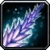
Dreamfoil23 Goldthorn15
Goldthorn15 Kingsblood14
Kingsblood14 Gromsblood13
Gromsblood13- Mageroyal11
 Sungrass11
Sungrass11 Firebloom10
Firebloom10 Khadgar's Whisker10
Khadgar's Whisker10 Mountain Silversage10
Mountain Silversage10 Peacebloom10
Peacebloom10 Plaguebloom10
Plaguebloom10 Earthroot9
Earthroot9 Fadeleaf9
Fadeleaf9- Purple Lotus9
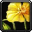
Wild Steelbloom9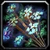
Blindweed8 Wintersbite8
Wintersbite8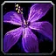
Arthas' Tears7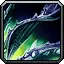
Black Lotus7 Briarthorn7
Briarthorn7 Bruiseweed7
Bruiseweed7 Ghost Mushroom7
Ghost Mushroom7 Golden Sansam7
Golden Sansam7 Silverleaf7
Silverleaf7 Stranglekelp7
Stranglekelp7 Icecap6
Icecap6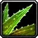
Swiftthistle6 Liferoot5
Liferoot5 Death Lotus4
Death Lotus4 Grave Moss4
Grave Moss4 Demonsage2
Demonsage2 Marefoil2
Marefoil2 Frilled Lichen1
Frilled Lichen1 Rosecap1
Rosecap1 Stranglevine1
Stranglevine1- Wildvine1
Leather, hides and scales — 1
Meat and cooking ingredients — 1
Elemental and enchanting materials — 14
 Essence of Earth3
Essence of Earth3 Essence of Water3
Essence of Water3 Elemental Earth2
Elemental Earth2 Essence of Air2
Essence of Air2 Essence of Fire2
Essence of Fire2- Heart of the Wild2
 Living Essence2
Living Essence2 Dream Dust1
Dream Dust1 Elemental Air1
Elemental Air1 Elemental Fire1
Elemental Fire1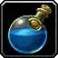
Elemental Water1 Essence of Undeath1
Essence of Undeath1 Heart of Fire1
Heart of Fire1 Ichor of Undeath1
Ichor of Undeath1
Thread, vials, dyes and other reagents — 20
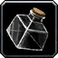
Crystal Vial67 Leaded Vial48
Leaded Vial48 Empty Vial37
Empty Vial37 Imbued Vial11
Imbued Vial11 Blackmouth Oil4
Blackmouth Oil4 Stonescale Oil4
Stonescale Oil4 Fire Oil3
Fire Oil3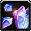
Black Vitriol2 Arcane Crystal1
Arcane Crystal1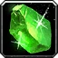
Fel Crystal1 Firefin Snapper1
Firefin Snapper1 Large Fang1
Large Fang1 Large Venom Sac1
Large Venom Sac1 Massive Mojo1
Massive Mojo1 Oily Blackmouth1
Oily Blackmouth1 Powerful Mojo1
Powerful Mojo1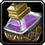
Purple Dye1 Sharp Claw1
Sharp Claw1 Small Flame Sac1
Small Flame Sac1 Stonescale Eel1
Stonescale Eel1
Items used as reagents — 5
Reagents of each recipe · 179 recipes
| Recipe | Reagents |
|---|---|
| Elixir of Minor Force | 1× Silverleaf, 1× Empty Vial |
| Mana Well | 1× Peacebloom, 1× Empty Vial |
| Minor Arcane Elixir | 1× Peacebloom, 1× Empty Vial |
| Elixir of Minor Spirit | 2× Earthroot, 1× Peacebloom, 1× Empty Vial |
| Minor Mageblood Elixir | 2× Mageroyal, 1× Empty Vial |
| Minor Mender's Potion | 2× Mageroyal, 1× Bruiseweed, 1× Empty Vial |
| Minor Spellblasting Potion | 1× Silverleaf, 1× Peacebloom, 1× Empty Vial |
| Cerulean Dye | 2× Frilled Lichen, 1× Empty Vial |
| Minor Frenzy Potion | 1× Earthroot, 1× Silverleaf, 1× Empty Vial |
| Sulfuric Acid | 2× Pyrite, 1× Empty Vial |
| Elixir of Minor Defense | 1× Silverleaf, 1× Peacebloom, 1× Empty Vial |
| Elixir of Minor Strength | 1× Earthroot, 1× Silverleaf, 1× Empty Vial |
| Minor Cleric's Elixir | 2× Mageroyal, 1× Bruiseweed, 1× Empty Vial |
| Elixir of Minor Agility | 1× Swiftthistle, 1× Silverleaf, 1× Empty Vial |
| Elixir of Minor Fortitude | 2× Earthroot, 1× Peacebloom, 1× Empty Vial |
| Minor Discolored Healing Potion | 1× Empty Vial, 1× Peacebloom, 1× Murloc Eye |
| Minor Troll's Blood Elixir | 1× Peacebloom, 2× Earthroot, 1× Empty Vial |
| Minor Mana Potion | 1× Mageroyal, 1× Peacebloom, 1× Empty Vial |
| Minor Rejuvenation Potion | 2× Mageroyal, 1× Peacebloom, 1× Empty Vial |
| Rage Potion | 1× Sharp Claw, 1× Briarthorn, 1× Empty Vial |
| Swiftness Potion | 1× Swiftthistle, 1× Briarthorn, 1× Empty Vial |
| Elixir of Lesser Spirit | 2× Wild Steelbloom, 1× Mageroyal, 1× Empty Vial |
| Blackmouth Oil | 2× Oily Blackmouth, 1× Empty Vial |
| Lesser Discolored Healing Potion | 1× Empty Vial, 1× Briarthorn, 1× Murloc Eye |
| Lesser Mageblood Elixir | 3× Kingsblood, 1× Empty Vial |
| Lesser Mender's Potion | 2× Kingsblood, 2× Liferoot, 1× Leaded Vial |
| Lesser Spellblasting Potion | 1× Mageroyal, 2× Silverleaf, 1× Empty Vial |
| Draught of Tongues | 2× Earthroot, 2× Mageroyal, 1× Empty Vial |
| Elixir of Giant Growth | 1× Deviate Fish, 1× Earthroot, 1× Empty Vial |
| Lesser Frenzy Potion | 1× Briarthorn, 2× Earthroot, 1× Empty Vial |
| Elixir of Lesser Intellect | 3× Kingsblood, 1× Leaded Vial |
| Lesser Cleric's Elixir | 2× Kingsblood, 2× Liferoot, 1× Leaded Vial |
| Holy Protection Potion | 1× Bruiseweed, 1× Swiftthistle, 1× Empty Vial |
| Draught of Water Breathing | 1× Stranglekelp, 2× Blackmouth Oil, 1× Empty Vial |
| Elixir of Wisdom | 1× Mageroyal, 2× Briarthorn, 1× Empty Vial |
| Minor Magic Resistance Potion | 3× Mageroyal, 1× Wild Steelbloom, 1× Empty Vial |
| Elixir of Spirit | 3× Khadgar's Whisker, 1× Kingsblood, 1× Leaded Vial |
| Lesser Arcane Elixir | 1× Kingsblood, 1× Goldthorn, 1× Crystal Vial or 4× Kingsblood, 1× Leaded Vial |
| Potion of Poison Cleansing | 1× Large Venom Sac, 1× Bruiseweed, 1× Leaded Vial |
| Swim Speed Potion | 1× Swiftthistle, 1× Blackmouth Oil, 1× Empty Vial |
| Magenta Dye | 2× Rosecap, 1× Leaded Vial |
| Discolored Healing Potion | 1× Leaded Vial, 1× Bruiseweed, 1× Murloc Eye |
| Mender's Potion | 2× Wintersbite, 2× Firebloom, 1× Leaded Vial |
| Elixir of Intellect | 3× Khadgar's Whisker, 1× Leaded Vial |
| Lesser Mana Potion | 1× Mageroyal, 1× Stranglekelp, 1× Empty Vial |
| Shadow Protection Potion | 1× Grave Moss, 1× Kingsblood, 1× Leaded Vial |
| Spellblasting Potion | 1× Wild Steelbloom, 1× Grave Moss, 1× Empty Vial |
| Elixir of Lesser Agility | 1× Wild Steelbloom, 1× Swiftthistle, 1× Leaded Vial |
| Fermenter | 1× Leaded Vial, 1× Kingsblood, 1× Swiftthistle |
| Frenzy Potion | 2× Fadeleaf, 2× Briarthorn, 1× Leaded Vial |
| Lesser Troll's Blood Elixir | 2× Bruiseweed, 2× Briarthorn, 1× Leaded Vial |
| Cleric's Elixir | 2× Wintersbite, 2× Firebloom, 1× Leaded Vial |
| Elixir of Lesser Defense | 1× Wild Steelbloom, 1× Stranglekelp, 1× Leaded Vial |
| Fire Oil | 2× Firefin Snapper, 1× Empty Vial |
| Elixir of Fortitude | 4× Goldthorn, 1× Leaded Vial |
| Elixir of Ogre Strength | 1× Earthroot, 1× Kingsblood, 1× Leaded Vial |
| Elixir of Strength | 3× Wild Steelbloom, 1× Goldthorn, 1× Leaded Vial |
| Free Action Potion | 2× Blackmouth Oil, 1× Stranglekelp, 1× Leaded Vial |
| Elixir of Fire Power | 2× Fire Oil, 1× Kingsblood, 1× Leaded Vial |
| Elixir of Greater Spirit | 3× Arthas' Tears, 2× Purple Lotus, 1× Crystal Vial |
| Fire Protection Potion | 1× Small Flame Sac, 1× Fire Oil, 1× Leaded Vial |
| Greater Discolored Healing Potion | 1× Leaded Vial, 1× Kingsblood, 1× Murloc Eye |
| Shadow Oil | 4× Fadeleaf, 4× Grave Moss, 1× Leaded Vial |
| Mana Potion | 1× Stranglekelp, 1× Kingsblood, 1× Leaded Vial |
| Elixir of Lesser Fortitude | 1× Wild Steelbloom, 1× Goldthorn, 1× Leaded Vial |
| Great Rage Potion | 1× Large Fang, 1× Kingsblood, 1× Leaded Vial |
| Greater Mageblood Elixir | 3× Blindweed, 2× Arthas' Tears, 1× Crystal Vial |
| Lesser Invisibility Potion | 1× Fadeleaf, 1× Wild Steelbloom, 1× Leaded Vial |
| Draught of Water Walking | 1× Blackmouth Oil, 1× Liferoot, 1× Leaded Vial |
| Greater Mender's Potion | 2× Arthas' Tears, 1× Purple Lotus, 1× Crystal Vial |
| Troll's Blood Elixir | 1× Liferoot, 1× Bruiseweed, 1× Leaded Vial |
| Greater Spellblasting Potion | 2× Kingsblood, 1× Fadeleaf, 1× Leaded Vial |
| Elixir of Frost Power | 2× Wintersbite, 1× Khadgar's Whisker, 1× Leaded Vial |
| Frost Protection Potion | 1× Wintersbite, 1× Goldthorn, 1× Leaded Vial |
| Greater Frenzy Potion | 3× Firebloom, 2× Fadeleaf, 1× Leaded Vial |
| Nature Protection Potion | 1× Liferoot, 1× Stranglekelp, 1× Leaded Vial |
| Draught of Detect Lesser Invisibility | 1× Khadgar's Whisker, 1× Fadeleaf, 1× Leaded Vial |
| Elixir of Agility | 1× Stranglekelp, 1× Goldthorn, 1× Leaded Vial |
| Greater Cleric's Elixir | 3× Arthas' Tears, 1× Purple Lotus, 1× Crystal Vial |
| Potion of Predatory Senses | 2× Fadeleaf, 2× Goldthorn, 1× Leaded Vial |
| Elixir of Greater Fortitude | 4× Sungrass, 1× Crystal Vial |
| Frost Oil | 4× Khadgar's Whisker, 2× Wintersbite, 1× Leaded Vial |
| Revealing Draught | 3× Fadeleaf, 1× Khadgar's Whisker, 1× Leaded Vial |
| Elixir of Defense | 1× Wild Steelbloom, 1× Goldthorn, 1× Leaded Vial |
| Catseye Draught | 1× Goldthorn, 1× Fadeleaf, 1× Leaded Vial |
| Goblin Rocket Fuel | 1× Firebloom, 1× Volatile Rum, 1× Leaded Vial |
| Greater Mana Potion | 1× Khadgar's Whisker, 1× Goldthorn, 1× Leaded Vial |
| Magic Resistance Potion | 1× Khadgar's Whisker, 1× Purple Lotus, 1× Crystal Vial |
| Oil of Immolation | 1× Firebloom, 1× Goldthorn, 1× Crystal Vial |
| Lesser Stoneshield Potion | 1× Mithril Ore, 1× Goldthorn, 1× Leaded Vial |
| Restorative Potion | 1× Elemental Earth, 1× Goldthorn, 1× Crystal Vial |
| Draught of Greater Water Breathing | 1× Ichor of Undeath, 2× Purple Lotus, 1× Crystal Vial |
| Superior Discolored Healing Potion | 1× Crystal Vial, 1× Sungrass, 1× Murloc Eye |
| Viridian Dye | 2× Stranglevine, 1× Crystal Vial |
| Philosopher's Stone | 4× Iron Bar, 1× Black Vitriol, 4× Purple Lotus, 4× Firebloom |
| Transmute: Mithril to Truesilver | 1× Mithril Bar |
| Wildvine Potion | 1× Wildvine, 1× Purple Lotus, 1× Crystal Vial |
| Superior Mender's Potion | 2× Sungrass, 1× Arthas' Tears, 1× Crystal Vial |
| Draught of Detect Undead | 1× Arthas' Tears, 1× Crystal Vial |
| Dreamless Sleep Potion | 3× Purple Lotus, 1× Crystal Vial |
| Invisibility Potion | 1× Ghost Mushroom, 1× Sungrass, 1× Crystal Vial |
| Superior Spellblasting Potion | 2× Wintersbite, 2× Khadgar's Whisker, 1× Leaded Vial |
| Arcane Elixir | 1× Blindweed, 1× Goldthorn, 1× Crystal Vial |
| Draught of Dream Vision | 3× Purple Lotus, 1× Crystal Vial |
| Elixir of Greater Intellect | 1× Blindweed, 1× Khadgar's Whisker, 1× Crystal Vial |
| Gift of Arthas | 1× Arthas' Tears, 1× Blindweed, 1× Crystal Vial |
| Superior Frenzy Potion | 3× Blindweed, 2× Firebloom, 1× Crystal Vial |
| Dragonfire Potion | 2× Mountain Silversage, 2× Firebloom, 1× Crystal Vial |
| Elixir of Greater Agility | 1× Sungrass, 1× Goldthorn, 1× Crystal Vial |
| Elixir of Greater Strength | 1× Sungrass, 1× Gromsblood, 1× Crystal Vial |
| Ghost Dye | 2× Ghost Mushroom, 1× Purple Dye, 1× Crystal Vial |
| Stonescale Oil | 1× Stonescale Eel, 1× Leaded Vial |
| Distilled Firewater | 4× Wintersbite, 2× Gromsblood, 1× Leaded Vial |
| Elixir of Holy Power | 3× Fire Oil, 3× Firebloom, 1× Crystal Vial |
| Elixir of Shadow Power | 3× Ghost Mushroom, 1× Crystal Vial |
| Elixir of the Phalanx | 2× Golden Sansam, 4× Sungrass, 1× Crystal Vial |
| Limited Invulnerability Potion | 2× Blindweed, 1× Ghost Mushroom, 1× Crystal Vial |
| Major Discolored Healing Potion | 1× Crystal Vial, 1× Plaguebloom, 1× Murloc Eye |
| Potion of Demon Slaying | 1× Gromsblood, 1× Ghost Mushroom, 1× Crystal Vial |
| Draught of Detect Demon | 2× Gromsblood, 1× Crystal Vial |
| Mighty Rage Potion | 3× Gromsblood, 1× Crystal Vial |
| Superior Mana Potion | 2× Sungrass, 2× Blindweed, 1× Crystal Vial |
| Caustic Smog Potion | 2× Ghost Mushroom, 2× Grave Moss, 1× Crystal Vial |
| Elixir of Greater Defense | 2× Stonescale Oil, 1× Sungrass, 1× Crystal Vial |
| Elixir of the Sages | 1× Dreamfoil, 2× Plaguebloom, 1× Crystal Vial |
| Alchemist's Stone | 8× Essence of Fire, 8× Essence of Earth, 8× Essence of Air, 8× Essence of Water, 8× Living Essence, 2× Black Vitriol, 4× Black Lotus |
| Elixir of Brute Force | 2× Gromsblood, 2× Plaguebloom, 1× Crystal Vial |
| Elixir of Cunning | 3× Dreamfoil, 2× Gromsblood, 1× Crystal Vial |
| Elixir of Ferocity | 3× Gromsblood, 1× Ghost Mushroom, 1× Crystal Vial |
| Elixir of Sages | 4× Dreamfoil, 2× Golden Sansam, 1× Imbued Vial |
| Elixir of the Whale | 3× Dreamfoil, 1× Gromsblood, 1× Crystal Vial |
| Greater Dreamless Sleep Potion | 2× Dreamfoil, 1× Golden Sansam, 1× Crystal Vial |
| Mageblood Elixir | 1× Dreamfoil, 2× Plaguebloom, 1× Crystal Vial |
| Potion of Venomous Blood | 3× Gromsblood, 2× Plaguebloom, 1× Crystal Vial |
| Transmute: Air to Fire | 1× Essence of Air |
| Transmute: Arcanite | 1× Thorium Bar, 1× Arcane Crystal |
| Transmute: Earth to Life | 1× Essence of Earth |
| Transmute: Earth to Water | 1× Essence of Earth |
| Transmute: Fire to Earth | 1× Essence of Fire |
| Transmute: Legionite | 1× Heavy Thorium Bar, 1× Fel Crystal |
| Transmute: Life to Earth | 1× Living Essence |
| Transmute: Undeath to Water | 1× Essence of Undeath |
| Transmute: Water to Air | 1× Essence of Water |
| Transmute: Water to Undeath | 1× Essence of Water |
| Elixir of the Mongoose | 2× Mountain Silversage, 2× Plaguebloom, 1× Crystal Vial |
| Elixir of the Owl | 4× Dreamfoil, 2× Mountain Silversage, 1× Imbued Vial |
| Greater Stoneshield Potion | 3× Stonescale Oil, 1× Thorium Ore, 1× Crystal Vial |
| Major Mender's Potion | 3× Dreamfoil, 1× Sungrass, 1× Imbued Vial |
| Potion of Beast Slaying | 2× Gromsblood, 2× Plaguebloom, 1× Imbued Vial |
| Potion of Elemental Purging | 2× Firebloom, 2× Wintersbite, 1× Crystal Vial |
| Elixir of Nature Power | 4× Golden Sansam, 2× Sungrass, 1× Crystal Vial |
| Elixir of Wicked Regeneration | 3× Golden Sansam, 2× Dreamfoil, 1× Crystal Vial |
| Greater Arcane Elixir | 3× Dreamfoil, 1× Mountain Silversage, 1× Crystal Vial |
| Living Action Potion | 2× Icecap, 2× Mountain Silversage, 2× Heart of the Wild, 1× Crystal Vial |
| Major Spellblasting Potion | 2× Dreamfoil, 1× Mountain Silversage, 1× Imbued Vial |
| Purification Potion | 2× Icecap, 2× Plaguebloom, 1× Crystal Vial |
| Greater Arcane Protection Potion | 1× Dream Dust, 1× Dreamfoil, 1× Crystal Vial |
| Greater Fire Protection Potion | 1× Elemental Fire, 1× Dreamfoil, 1× Crystal Vial |
| Greater Frost Protection Potion | 1× Elemental Water, 1× Dreamfoil, 1× Crystal Vial |
| Greater Holy Protection Potion | 1× Elemental Air, 1× Dreamfoil, 1× Crystal Vial |
| Greater Nature Protection Potion | 1× Elemental Earth, 1× Dreamfoil, 1× Crystal Vial |
| Greater Shadow Protection Potion | 1× Shadow Oil, 1× Dreamfoil, 1× Crystal Vial |
| Major Frenzy Potion | 3× Plaguebloom, 2× Blindweed, 1× Imbued Vial |
| Major Troll's Blood Elixir | 1× Gromsblood, 2× Plaguebloom, 1× Crystal Vial |
| Major Mana Potion | 3× Dreamfoil, 2× Icecap, 1× Crystal Vial |
| Alchemy Laboratory | 1× Lich's Index Finger, 1× Crystal Vial, 2× Dreamfoil |
| Flask of Chromatic Resistance | 30× Icecap, 10× Mountain Silversage, 1× Black Lotus, 1× Crystal Vial |
| Flask of Distilled Wisdom | 30× Dreamfoil, 10× Icecap, 1× Black Lotus, 1× Crystal Vial |
| Flask of Natural Accuracy | 1× Death Lotus, 12× Demonsage, 9× Golden Sansam, 1× Imbued Vial |
| Flask of Natural Aggression | 1× Death Lotus, 18× Demonsage, 6× Mountain Silversage, 1× Imbued Vial |
| Flask of Natural Precision | 1× Death Lotus, 12× Marefoil, 9× Dreamfoil, 1× Imbued Vial |
| Flask of Natural Swiftness | 1× Death Lotus, 18× Marefoil, 6× Icecap, 1× Imbued Vial |
| Flask of Petrification | 30× Stonescale Oil, 10× Mountain Silversage, 1× Black Lotus, 1× Crystal Vial |
| Flask of Supreme Power | 30× Dreamfoil, 10× Mountain Silversage, 1× Black Lotus, 1× Crystal Vial |
| Flask of the Titans | 30× Gromsblood, 10× Stonescale Oil, 1× Black Lotus, 1× Crystal Vial |
| Gurubashi Mojo Madness | 1× Blood of Heroes, 1× Massive Mojo, 6× Powerful Mojo, 1× Black Lotus |
| Major Rejuvenation Potion | 1× Heart of the Wild, 4× Golden Sansam, 4× Dreamfoil, 1× Imbued Vial |
| Refined Scale of Onyxia | 1× Scale of Onyxia |
| Transmute: Elemental Fire | 1× Heart of Fire |
Correction history
- 12 November 2026 (draft, not approved): first complete list of this profession’s recipes, from client-extracted data, marked “to be confirmed”. No publication.[4][1]
- 13 November 2026: “to be confirmed” removed from facts found in the game files (client 1.60.1.70862), t359u decision. Acquisition marked “unknown”, zones not given, sources without a build stamp, and inferred values remain to be confirmed. This is not an official Blizzard confirmation, and not a publication.[4] Game data (client 1.60.1.70862)
- 14 November 2026: internal links to already published sheets (bestiaries, recipe lists, dungeons) — v40 batch, t361u. No new facts.[1][2][3][4]
- 17 November 2026 (v42): added the “Materials: where to find them” section (reagents of each recipe, read from the game files, client 1.60.1.70862).[5] Game data (client 1.60.1.70862)
What is confirmed / what remains to be confirmed
Confirmed by official sources
Still to be confirmed
- Complete official list of recipes, materials, prices and named trainers: not published by Blizzard.
- For some recipes, acquisition, source or zone was not given in the data consulted; those cells stay as “not recorded”.
- Drop rates: not given in the data consulted, and not officially published.
Key dates
Sources
- [1] World of Warcraft: Forever Deep Dive Panel Recap (EN) · published · accessed
Récapitulatif de la présentation « Au cœur de World of Warcraft: Forever » (FR) · published · accessed - [2] Gather Around the Campfire in World of Warcraft: Forever (EN) · published · accessed
Retrouvez-vous autour d’un feu de camp dans World of Warcraft: Forever (FR) · published · accessed - [3] WoW: Forever Hotfixes - November 11, 2026 (EN) · published · accessed
- [4] Alchemy profession guide — full recipe list (game data (client 1.60.1.70862) (EN) · no publication date shown · accessed
Guide Alchimie — liste des recettes (données du jeu (client 1.60.1.70862) (FR) · no publication date shown · accessed Game data — client 1.60.1.70862 - [5] WoW Forever client files, build 1.60.1.70862 — data tables and icons read from Blizzard’s official CDN (EN) · no publication date shown · accessed Game data — client 1.60.1.70862
Official Blizzard Entertainment sources (all rights reserved). This wiki offers an original synthesis; only short quotes are reproduced. Announced information may change before or after launch. Sources marked “game data” come from the WoW Forever client files (build 1.60.1.70862). This is not an official Blizzard confirmation.
Documentary version : World of Warcraft: Forever — annonces officielles et fichiers du jeu (client 1.60.1.70862), état documentaire 2026-11-17 · revision 17